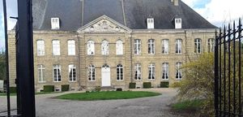
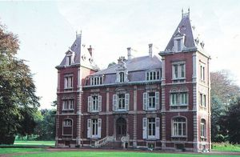
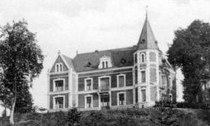
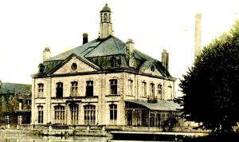
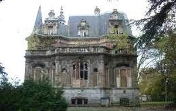
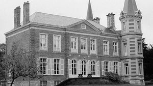

Recensement Jean-Claude Truffet
| Département | 62 — Pas-de-Calais |
| Canton | Longuenesse |
| Commune | Blendecques |
| Type d'édifice | Chateaux |
| Période d'origine | XVII-XVIII |






quatre châteaux dans cet article Ste-Colombe, Bellevue, Montrayant et Blancbourg. SAINTE-COLOMBE ; de l'abbaye fondée en 1186 et reconstruite au XVIIIe siècle ne subsistèrent après la Révolution qu'un monumental portail de pierre et un bâtiment classique en brique jaune dont le corps central et sur chaque façade sommé d'un fronton sculpté. A l'intérieur caves voutées et escalier en bois à balustres ajourés, propriété de monsieur Houzet. L'ensemble des vestiges de l'ancienne abbaye a été inscrit à l'inventaire supplémentaire des monuments historiques par arrêté du 27 juin 1991.
MONTRAYANT (dit dHelfaut), construit à la même époque que le précédent. En 1776 la seigneurie fut vendue par la comtesse Mérode, princesse de Rubempré à Messire Pierre Sandelin, comte de Fruges. La cense est occupée par Marie Jacqueline Françoise Pacou. La dernière héritière du nom Marie Olympe de Sandelin et son époux le baron Colbert-Caste-Hill, (ils habitaient, dans leur hôtel particulier, à St.Omer, aujourdhui musée Sandelin, Ils furent inhumé à lancien cimetière de Blendecques en 1879 et 1882, près de la nef Sud de la nouvelle église.
BELLEVUE, date de construction: 1808 Albert Frédéric Joseph Gonsse 1766-1819, manufacturier, propriétaire du moulin au fer blanc, possède un manoir à la campagne avec jardin et 4,96 hectares comprenant bois, basse cour, écuries, vacherie, porcherie et remise. En 1855, la propriété appartient à Charles Ambroise Platiau 1804-1882 qui la met en location en 1857 avant que Louis Auguste Platiau 1877-1924 lhabite au moins de 1904 a 1909 mais le manque de chambres et l'exposition nord lamène à déménager pour le château de la Garenne.
BLANCBOURG, construit au XIIe siècle, fut assiégé, pris et dévasté par les français en 1595, en même temps que le château de Longastre à Heuringhem. Le 16 mars 1604, Jeanne de Rummel, propriétaire semble avoir épousé en secondes noces Philippe de Lilleville sieur de Comerelle. En 1610 Jacques de la Becque est seigneur du Blancbourg, puis le fief passe à sa fille Mme de Boncourt, et ensuite (sans doute par vente) dans la famille des barons de Wintrefeld. Le 24 avril 1713 Messire Ernest de Wintrefeld, prêtre chanoine de la cathédrale de Gand, vend le château à Gilles Marcotte, seigneur de Roquetoire. Celui-ci lèguera le château à sa fille, épouse du sieur Bodin.
Bellevue; famille de Albert Frédéric Joseph Gonsse Montrayant ; Messire Pierre Sandelin, Blancbourg; Jacques de la Becque "
quatre châteaux dans cet article Ste-Colombe grav-1, Bellevue gra-3, Montrayan grav-4 et Blancbourg grav-5.